Técnicas de adaptación¶
Adaptador de impedancia.
Un adaptador de impedancia, en este caso un el cuadripolo colocado en cascada en el circuito, modifica la resistencia de carga dada \(R_L\) a una un valor dado de entrada o la resistencia de entrada a un valor dado de salida.
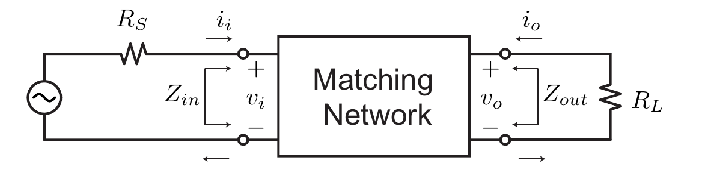
Dependiendo del uso, estos valores de entrada o salida se ajustan para lograr distintos objetivos. A continuación se listan los mas frecuentes.
Transferencia de energia óptima: maximiza la transferencia de energia desde la fuente (por ejemplo, una antena) y la carga (por ejemplo, un amplificador).
Cifra de ruido óptima: amplificadores que agreguen la menor cantidad de ruido a una señal mientras realizan la amplificación. Esta depende de la impedancia presentada al dispositivo activo.
Criterio de estabilidad: donde se busca la estabilidad del sistema.
Reflexiones mínimas en las líneas de transmisión: Las reflexiones causan dispersión e interferencia y dan como resultado una impedancia de entrada sensible cuando se mira en la línea de transmisión (cambia con la distancia).
Eficiencia óptima: los amplificadores de potencia obtienen la máxima eficiencia cuando utilizamos la mayor oscilación de voltaje posible en el nodo de salida de los elentos activos (drain o colector), lo que requiere que hagamos coincidir la carga con un valor que satisfaga las condiciones de potencia de carga y oscilación de carga.
Cuadripolo de parametros admitancia
El circuito de un cuadripolo admitancia se muestra en la figura.
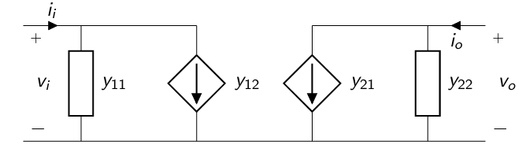
Las ecuaciones del cuadripolo en función de los parametros de admitancia y tensiones del circuito:
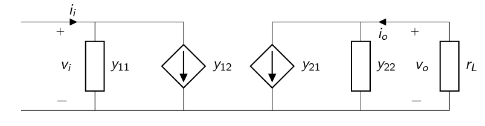
Del circuito, se puede calcular la admitacia de entrada dada una admitancia de salida \(y_{L}\):

Del circuito, se puede calcular la admitacia de entrada dada una admitancia de salida \(y_{L}\):
Circuitos resonantes.¶
Ademas de realizar adaptaciones de impedancia, los sistemas de RF precisan filtros pasabanda para atenuar las bandas de frecuencias no deseada, como la de frecuencia imagen. Por su flexibilidad, los circuitos resonantes permiten diseñar filtros pasabanda fijos o variables.
En su forma mas básica, estan formados por elementos reactivos (inductancias y capacitancia). Estos circuitos pueden ser relizados por elementos de constantes concetradas como inductores o capacitores, elementos de constantes distribuidas, como los obtenidos de las líneas transmisión o elementos resonantes como cristales piezoeléctricos.
A continuación, se analizaran circuitos resonantes simples formados por inductancias y capacitancia en paralelo y en serie.
Factor de selectidad \(Q\)¶
El factor de selectividad es un parámetro que mide la relación entre la energía reactiva que almacena y la energía que disipa durante un ciclo completo de la señal. Este parametro esta relacionado con el ancho de banda. Un alto factor \(Q\) indica una tasa baja de pérdida de energía en relación a la energía almacenada por el resonador. Es un parámetro importante para los osciladores, filtros y otros circuitos sintonizados, pues proporciona una medida de lo selectiva que es su resonancia.
El factor de selectividad entonces se calcula como:
Factor de selectidad en circuito paralelo¶
En un circuito paralelo conformado por una reactancia y una resistencia, la tensión es un parametro comun para ambos componentes, por lo tanto, las potencias las debemos calcular en función de este.
En un circuito RL:
En un circuito RC:
Factor de selectidad en circuito serie¶
En un circuito serie conformado por una reactancia y una resistencia, la corriente es un parametro comun para ambos componentes, por lo tanto, las potencias las debemos calcular en función de este.
En un circuito RC:
En un circuito RL:
Circuito resonante RLC paralelo.¶
Comenzamos el analisis empleando el circuito de la figura.
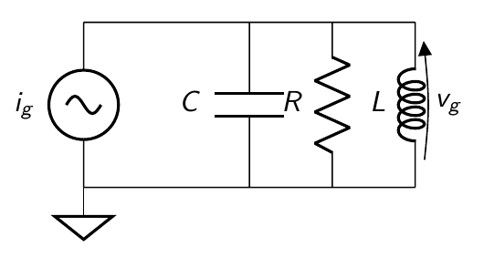
Calcularemos la transferencia del circuito. Vamos a emplear una fuente de corriente y calcular la tensión en el nodo comun.
Calculando para \(S=j\omega\), para el analisis del comporatamiento del circuito en frecuencia:
Donde podemos normalizar la ecuación empleando los terminos \(Q\), ya presentado, y \(\omega_o^2 = \frac{1}{LC}\) como la frecuencia de resonancia.
Podemos remplazar el \(C = \frac{Q}{R \cdot \omega_o}\)
Sacando factor comun \(j \omega_o \omega\) y simplificando :
Donde es facil reconocer el que el máximo de transferencia se produce cuando \(\omega^2 = \omega_o^2\) (resonancia).
El factor de selectividad relaciona el \(Q\) con el ancho de banda del circuito.
Para tener el ancho de banda, debemos buscar el ancho de banda donde la transferencia sea mayor a los \(3dB\).
El modulo de la transferencia,
Por lo tanto, las frecuencias donde cae \(3dB\).
Donde \(f_c\) puede tomtar los valores.
Entonces el ancho de banda:
donde \(f_o\) corresponde a la frecuencia de resonancia (\(\omega = 2 \pi f_o\)).
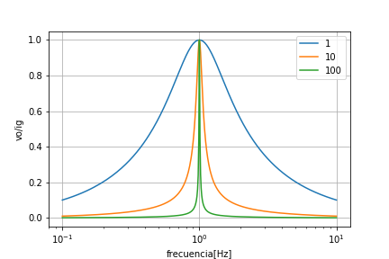
\(Q_o\) (\(Q\) libre) en inductores y capacitores¶
Los inductores y capaciores reales presentan perdidas. Esto quiere decir que a la frecuencia de trabajo, el comportamieto de estos componentes se pude modelizar (de la manera mas simple) como una inductancia o capacitancia, en paralelo con una resistencia de perdidas.
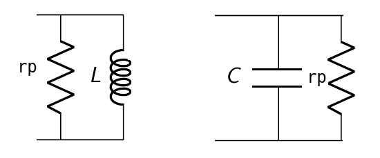
El \(Q_o\) (libre) de un inductor para el modelo paralelo, dada una resistencia de perdida \(r_p\) se calcula como:
Inductores de alto Q para RF¶
Como ejemplo podemos ver como la curva de los inductores de alto Q que comercializa la empresa Johanson (https://www.johansontechnology.com/downloads/johanson-technology-rf-wirewound-chip-inductors.pdf)
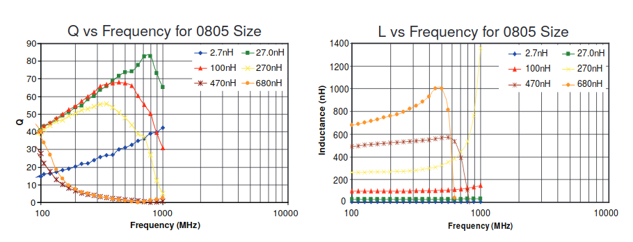
El factor de selectividad y la resistencia equivalente serie (ESR)¶
Uno de los parámetros más importantes en la evaluación de un condensador de chip de alta frecuencia es el factor Q, o la resistencia en serie equivalente (ESR) relacionada.
Un condensador sin perdidas presenta un ESR de cero ohmios y sería puramente reactivo sin ningún componente real (resistiva). La corriente que pasa por el capacitor conduciría el voltaje a través exactamente 90 grados en todas las frecuencias.
Los capacitores no son ideales, y siempre exhibirá una cantidad finita de ESR. El ESR varía con la frecuencia de un capacitor dado y es “equivalente” porque su fuente proviene de las características de las estructuras de electrodo conductor y de la estructura dieléctrica aislante. Con el propósito de modelar, el ESR se representa como un elemento parásito de una sola serie. En las últimas décadas, todos los parámetros del condensador se midieron a un estándar de 1 MHz, pero en el mundo de alta frecuencia actual, esto está lejos de ser suficiente. Los valores típicos para un buen condensador de alta frecuencia de un valor dado podrían funcionar en el orden de aproximadamente 0,05 ohmios a 200 MHz, 0,11 ohmios a 900 MHz y 0,14 ohmios a 2000 MHz.
El factor de calidad Q es un número adimensional que es igual a la reactancia del capacitor dividido por la resistencia parásita del capacitor (ESR). El valor de Q cambia mucho con la frecuencia, ya que tanto la reactancia como la resistencia cambian con la frecuencia. La reactancia de un condensador cambia enormemente con la frecuencia o con el valor de capacitancia y, por lo tanto, el valor Q podría variar en gran medida.
http://www.vishay.com/docs/28534/highqdielectric.pdf
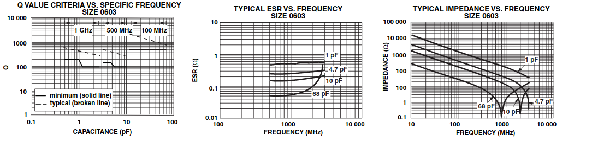
\(Q_c\) (\(Q\) cargado) en circuitos RLC paralelos.¶
El \(Q_c\) nos permite conocer el comporatamiento del circuito cuando esta cargado por la impedancia de la fuente y la de la carga.
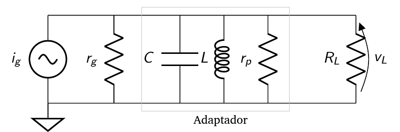
Del circuito resonante paralelo, en resonancia (donde se anula la componente imaginaria) la resistencia total \(\frac{1}{r} = \frac{1}{r_p} + \frac{1}{R_{ext}}\) se calcula como:
donde \(R_{ext} = \frac{r_g R_L}{r_g + R_L}\)
Entonces, de igual manera multiplicando ambos terminos por \(w_o \cdot L\):
https://www.coilcraft.com/pdfs/Doc945_Inductors_as_RF_Chokes.pdf
http://www.ee.iitm.ac.in/~ani/2011/ee6240/pdf/AN721_AppNote_Matching.pdf
Circuito RLC serie.¶
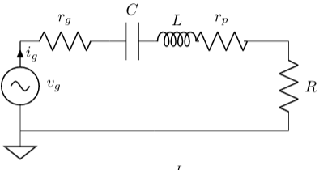
En un circuito RLC serie en resonancia,
,
\(Q_c\) (\(Q\) cargado) en circuitos RLC serie.¶
El \(Q_o\) (libre) de un inductor para el modelo paralelo, dada una resistencia de perdida \(r_p\) se calcula como:
El \(Q_c\) (cargado) de este circuito resonante para el modelo serie, dada una resistencia total \(r = r_p + R_{ext}\) se calcula como \(Q_c = \frac{w_o \cdot L}{r}\), donde \(R_{ext} = r_g + R\).
Entonces, dividiendo ambos miembros de la ecuación por \(w_o \cdot L\):
Conversión serie a paralelo¶
Buscaremos la relación entre un circuito resonante serie y un resonante paralelo. Esto será muy util para el diseño y verificación de los filtros, ya que no permitiran agilizar los calculos.
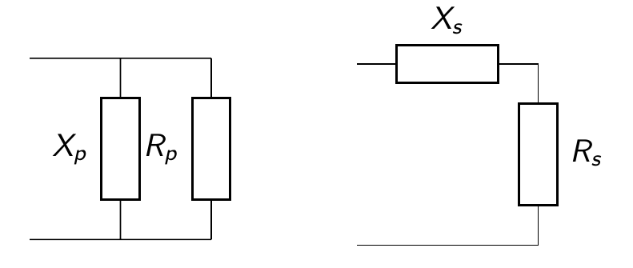
En un circuito resonante paralelo, la impedancia de entrada se calcula como:
Separando la parte real de la parte imaginaria:
En un circuito resonante serie, la impedancia de entrada se calcula como:
Entonces, en resonancia, igualando la parte real de la impedancia :
En resonancia, \(Q_o = \frac{R}{X_p}\), entonces \(X_p = \frac{R}{Q_o}\). Remplazando resulta:
Sacando \(R_p^2\) como factor comun y simplificando resulta:
Por lo tanto, en resonancia, igualando la parte imaginaria de la impedancia :
De las ecuaciones, podemos concliuir que para realizar una conversion de serie a paralelo, donde el \(Q_o\) se suele llamar \(Q_m\) (Q de adaptación o ‘matching’), ya que no solo se emplea para las perdidas de los compoentes:
Si el \(Q_m\) es mayor a 10 podemos despreciar el termino \(\frac{1}{Q_m^2}\)
Ejemplo conversión serie a paralelo¶
Se desea diseñar una red de adaptación para transformar una carga de \(R_L = 50 \Omega\) para que presente a el colector de un transistor una resistencia de \(R_L' = 1000 \Omega\) a la frecuencia de \(f_o = 2 MHz\). Por simplicidad, suponenemos que todos los componentes no tienen perdidas (son ideales) y que la salida del transistor presenta una admitancia resistiva pura.
Para resolver este diseño, debemos primero realizar la conversión de serie a paralelo del inductor y la resistencia. Esta conversión tiene que darnos como resultado una resistencia paralelo de \(R_L' = 1000 \Omega\). La conversión de serie a paralelo depende del valor de \(Q_m\) (\(Q\) de matching).
Entonces con un \(Q_m = 4.36\) la resistencia del circuito paralelo se comporta como una resistencia de \(R_p = 1000 \Omega\).
Debemos conocer el valor del inductor que permite tener un \(Q_m = 4.36\). Dado que el valor que queremos conocer corresponde al inductor \(L\) serie, empleamos el calculo del \(Q_m\) del circuito serie (recordando que la correinte es el parametro comun para el calculo de la potencia en ambos componentes).
siento \(X_L = w_o \cdot L\), donde \(w_o = 2 \pi f_o\). Entonces,
Para obtener el valor de \(C\), necesitamos conocer el valor del inductor correspondiente al circuito paralelo. Debemos calcular su valor para el circuito paralelo.
El valor que resuena con el capacitor entonces es \(X_C = X_L'\), siendo \(X_C = \frac{1}{w_o \cdot C}\). Hacemos entonces el calculo del valor del capacitor \(C\).
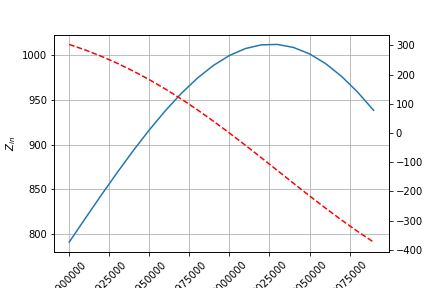
Como vemos en este ejemplo, se logra la adaptación de la resistencia mediante la conversión de serie a paralelo. Dado que se emplean solo dos componentes reactivos, el \(Q_c\) queda impuesto por el circuito y no puede ser modificado sin afectar la adaptación.
Máxima transferencia de energía a \(Q\) constante.¶
Se desea encontrar el valor de \(R_L\) que maximice la tranferencia de energía desde el generado a la carga, teniendo en cuenta que se emplea un circuito sintonizado \(LC\) con perdidas (\(r_p\)) donde se busca el valor de \(R_L\) para lograr la máxima transferencia de energía desde la fuente para un dado un \(Q_c\).
Dado que el circuito sintonizado esta compuesto por dos componentes, \(L\) y \(C\), para cada valor de \(R_L\) podriamos proponer que el inductor \(L\) se escoja para tener un \(Q_c\) dado y, luego, se buscará el valor de \(C\) que sintonice a \(w_o\). Asumimos que el \(Q_o\) libre del inductor no varia en este analisis.
La potencia sobre \(R_L\)
La tensión \(v_L\), que se expresa en valores eficaces, se puede obtener en función de la fuente de corriente que alimenta al circuito como:
Remplazando el valor de \(v_L\) en \(P_{R_L}\):
Operando,
De la ecuación, \(r_p\) buscamos escribir en función de \(Q_c\).
Sabemos que \(r_p = w_o \cdot L \cdot Q_o\).
donde \(R = \frac{R_L \cdot r_g }{ R_L + r_g }\).
Remplazando \(r_p\) en la ecuación de la potencia \(P_{R_L}\):
Buscando el máximo valor de \(P_{R_L}\):
Entonces :
donde \(i_g\) es valor RMS. Si se emplea valores pico:
donde reconocemos el termino \(\frac{i_g^2 \cdot r_g}{8}\) como \(P_{av}\) o potencia disponible.
Ejemplo¶
Suponer que \(r_g = 10 \Omega\), \(f_o = 1 MHz\), \(Q_o = 100\) y \(Q_c = 10\).
¿Cual debe ser el valor de \(R_L\) para obtener la maxima transferencia de energía, si se desae tener un \(Q_c = 10\)?
Por la demostración realizada, la resistencia debe ser \(R_L = r_g\), sin importar el valor de \(r_p\).
Por lo tanto, basado en el teorema de máxima transferencia de energía a \(Q_c\) constante:
Para este ejemplo, el valor del inductor entonces:
Donde corresponde a todas las resistencias externas al inductor y su respectiva resistencia de perdidas \(r_p\). En este caso, \(R_{ext} = \frac{r_g R_L}{r_g R_L} = 5 \Omega\)
En este ejemplo, el valor de la resistencia de perdidas del adaptador (que asociamos al inductor):
El valor del capacitor \(C\) es aquel que sintoniza a \(L\).
Nos queda conocer las perdidas del adaptador. Para ello, dado la ecuación del calculo de la potencia:
Las perdidas del adaptador se calcula como:
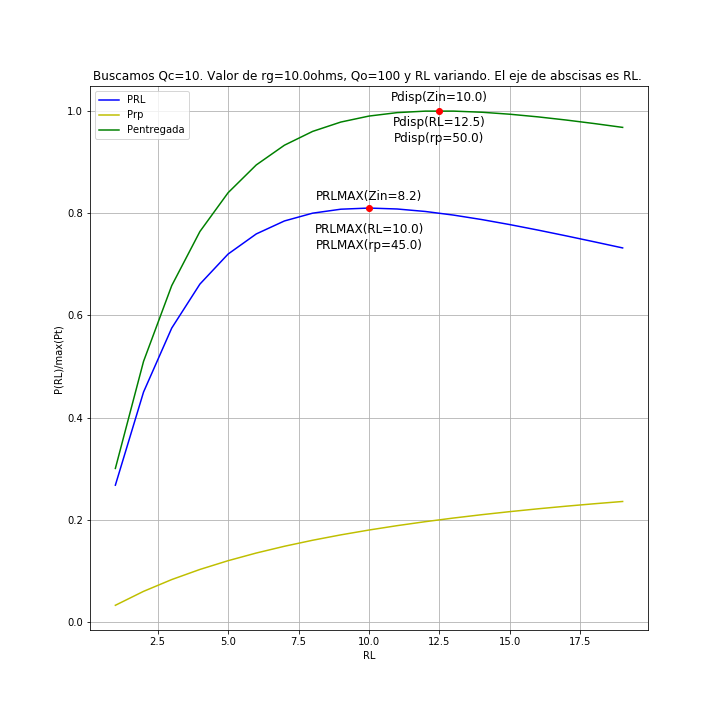
Redes de adaptación, circuitos resonantes con derivación.¶
El adaptador tipo “L”¶
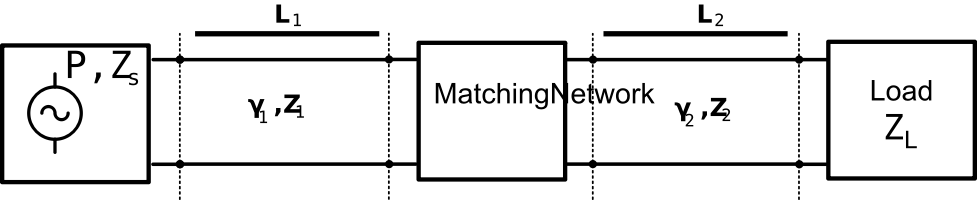
El problema general se ilustra en la siguiente figura: un generador con un impedano interno 𝑍𝑆 suministra energía a una carga pasiva 𝑍𝐿, a través de una red de coincidencia de 2 puertos.
Este problema se denomina comúnmente “el problema de doble coincidencia”. La coincidencia de impedancia es importante por las siguientes razones:
Maximizando la transferencia de potencia. La potencia máxima se entrega a la carga cuando el generador y la carga coinciden con la línea y la pérdida de potencia en la línea se minimiza.
Mejora de la relación señal / ruido del sistema.
Reducción de errores de amplitud y fase.
Reducción de la potencia reflejada hacia el generador.
Mientras la impedancia de carga 𝑍𝐿 tenga una parte positiva real, siempre se puede encontrar una red coincidente. Hay muchas opciones disponibles y los ejemplos a continuación solo describen algunas. Los ejemplos están tomados del libro de D.Pozar “Ingeniería de microondas”, cuarta edición. “Microwave Engineering”, 4th edition.
Adaptador con elementos de constantes concentradas.¶
Para comenzar, supongamos que la red adaptadora que no tiene pérdidas y la impedancia característica de la línea de alimentación es \(Z_o\):
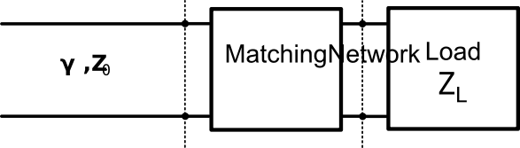
El tipo más simple de red es la red “L”, que utiliza dos elementos reactivos para adaptadar una impedancia de carga arbitraria. Existen dos configuraciones posibles y se ilustran en las siguientes figuras. En cualquiera de las configuraciones, los elementos reactivos pueden ser inductivos de capacitivos, dependiendo de la impedancia de carga.
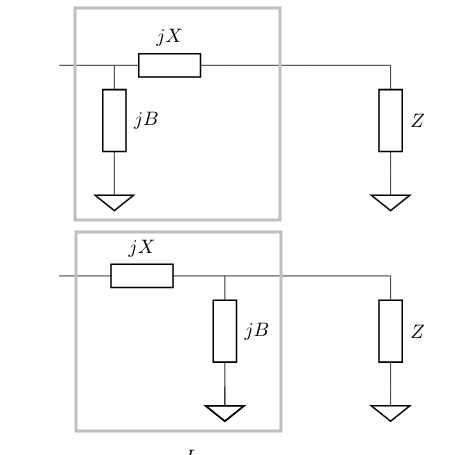
Supongamos que la carga es \(Z_L = 200 \Omega\) para una línea \(Z_o = 100 \Omega\) a la frecuencia de \(f_o = 500 MHz\).
El adaptador tipo “L” debe llevar de \(\Re{(Z_L)} = 200 \Omega\) a la impedancia de \(Z_o = 100 \Omega\) de la linea. En este esquema, deseamos reducir el valor de la resistencia, por lo tanto empleamos una conversión de paralelo a serie. Buscamos una red L-C que corresponda a la primer propuesta. Tenemos dos alternativas, las cuales se ilustran en la sigueinte figura.
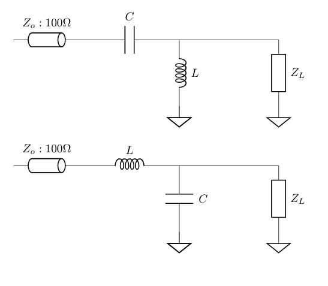
Esta conversión tiene que darnos como resultado una resistencia serie de \(R_L' = 100 \Omega\). La conversión de serie a paralelo depende del valor de \(Q_m\) (\(Q\) de matching).
El \(Q_m = 1\) permite que la resistencia del circuito serie se comporta como una resistencia de \(R_s = 100 \Omega\).
Calculemos ahora la susceptancia \(B_p\) para el \(Q_m\) necesario. Siendo este un circuito paralelo que tiene como parametro común la tensión:
Para conocer el valor de la reactancia \(X_s\), debemos realizar la conversión paralelo a serie de la susceptancia \(B_p\).
El valor de \(X_s\) que resuena con \(B_p'\).
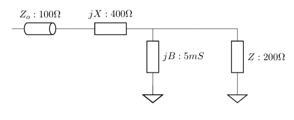
Primera alternativa: C serie, L derivación
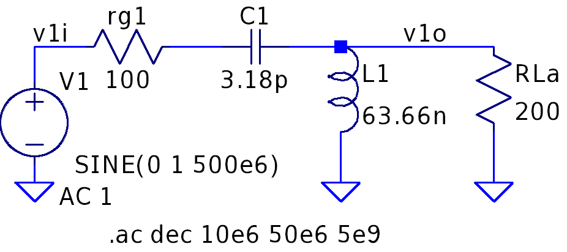
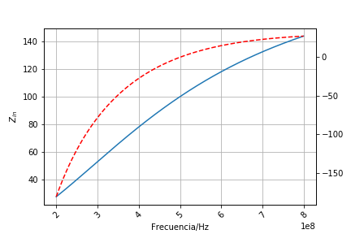
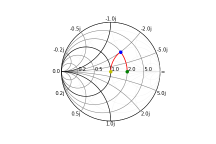
Segunda alternativa: L serie, C derivación 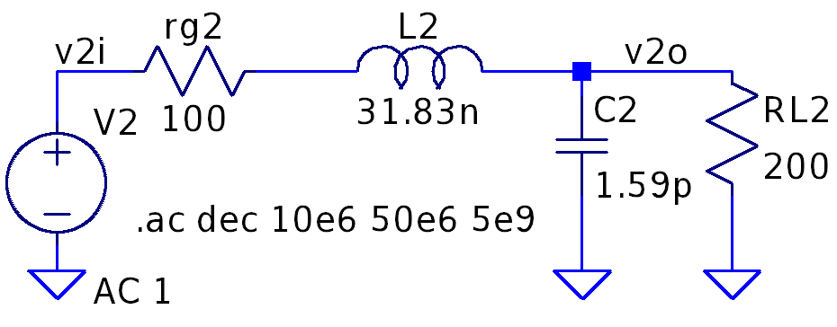
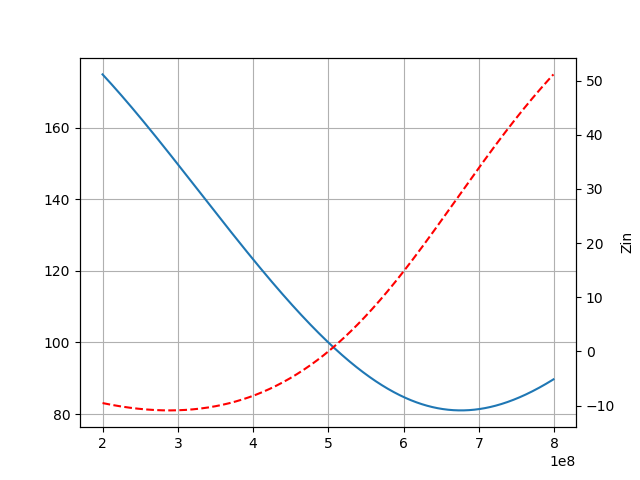
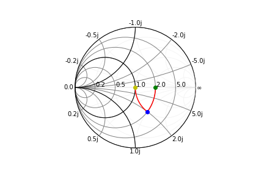
Conclusiones
Ambas alternativas cumplen con el objetivo de adaptar la impedancia de carga a la linea. Podemos adaptar a una unica frecuencia. Para el caso de máxima transferencia de energía, el \(Q_c\) del circuito queda impuesto. Si se desea ademas un valor determiando, se necesitaran mas componentes.
Por otro lado, podemos ver que la primer alternativa corresponde a un pasa alto y la segunda a un pasabajos. La elección dependerá del uso de este circuito.
Ejemplo adaptador tipo L, adaptador para antena de 11m.¶
Supóngase querer adaptar una antena látigo de \(3 m\) que presenta \(50 \Omega\) a aprox. \(27MHz\), pero que va a usarse a \(3 MHz\), presentando en este caso una impedancia \(Z_{ant}= 0.3 \Omega + j \frac{1}{2 \pi 3MHz 30nF}\).
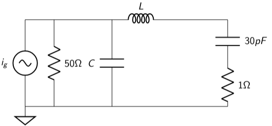
Se desea que el equipo transmisor, la fuente de corriente, tenga una carga de \(Z_{in} = 50\Omega+j0\Omega\) @ \(3 MHz\) para que esté adaptada, se recurre así al circuito de adaptación mostrado en la figura compuesto por L y C. Suponga que la resistencia de perdida de L es \(r_p = 1\Omega\). La potencia disponible del transmisor es \(P_{disp} = 100 W\).
Calculo L y C sin perdidas
Para el cálculo del inductor primero debemos neutralizar el efecto de la capacitancia producida en la antena. Para ello, separamos el inductor en dos inductores conectados en serie, como muestra la figura.
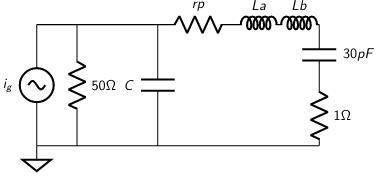
Calculamos \(L_b\) para que neutralice o resuene con la capacidad.
El circuito resultante en la rama es un RL serie en paralelo con el capacitor de adaptación. Es necesario que el circuito serie RL se presente como un circuito paralelo RL, donde R debe tomar valor el valor de \(50 \Omega\). Para ello necesitamos calcular el \(Q_M\) que permita obtener el valor buscado.
A partir de \(Q_M\) calculamos \(L_a\).
Para finalmente obtener el valor de \(L\).
El capacitor que resuena con el \(L'\) equivalente paralelo entonces,
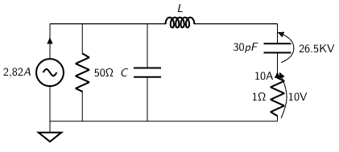
Calcular la potencia en la carga.
Para el calculo de la potencia, en base a la potencia disponible calculamos la carga.
Transformador¶
Transformadores de RF¶
Los transformadores de RF son principalmente utilizados en circuitos para: 1. Adaptación de impedancia para lograr la máxima transferencia de potencia y para suprimir la reflexión de señal no deseada. 2. Voltaje, corriente ascendente o descendente. 3. Aislamiento de CC entre circuitos al tiempo que permite una transmisión de CA eficiente. 4. Interfaz entre circuitos balanceados y no balanceados; ejemplo: amplificadores balanceados.
CIRCUITOS DE TRANSFORMADORES Y RELACIONES DE IMPEDANCIA¶
En general, es necesario controlar las impedancias de terminación de las lineas de señal de RF, especialmente en aplicaciones de banda ancha donde las longitudes de las lineas no son despresiables en relación con la longitud de onda. Los transformadores de RF de banda ancha se enrollan utilizando cables trenzados que se comportan como líneas de transmisión, y el acoplamiento requerido se produce a lo largo de estas líneas, así como magnéticamente a través del núcleo. El rendimiento óptimo se logra cuando los devanados primario y secundario están conectados a impedancias de terminación resistivas para las cuales está diseñado el transformador. Los transformadores que tienen una relación de espiras de \(1:1\), por ejemplo, generalmente están diseñados para usarse en un sistema de \(50\) o \(75 \Omega\).
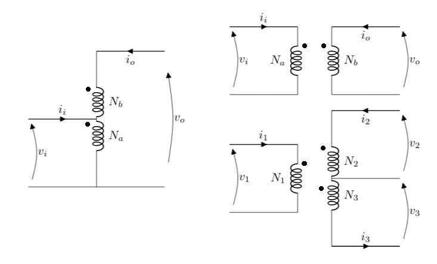
En la figura, se ilustran tres topologías de devanado de transformador. El de la Figura 1a es el más simple. Este diseño, denominado autotransformador, tiene un devanado continuo roscado y no tiene aislamiento de CC. El transformador en la Figura 1b tiene bobinados primarios y secundarios separados, y proporciona aislamiento de CC. Sin embargo, el rendimiento de RF de estas configuraciones es similar.
Autotransformador¶
Las ecuaciónes del autotransformador, segun la figura:
Las impedancias de entrada y de salida:
En base a esta última ecuación, se puede obtener los valores de los inductores que conforman el transformador.
Transformador¶
Las ecuaciónes del transformador, segun la figura:
Las impedancias de entrada y de salida:
En base a esta última ecuación, se puede obtener los valores de los inductores que conforman el transformador.
Ejemplo transformador¶
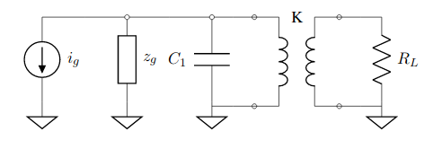
Supongamos que es necesitamos un transformador para un circuito sintonizado en \(10 MHz\) con \(Q_c = 10\), empleando el mismo circuito. La resistencia de carga es de \(R_L = 10 \Omega\) y la del generador es de \(r_g =100 \Omega\).
El transformador en este caso debe presentar en sus bornes del bobinado primario \(r_g = 100 \Omega\) a \(r_g' =10 \Omega\) en el secundario.
donde \(N_1\) es la cantidad de espiras del primario, \(N_2\) es la cantidad de espiras del secundario, \(R_L^{'}\) es la resistencia de carga vista desde los bornes del primario (\(100 \Omega\)) y \(R_L\) (\(10 \Omega\)).
La resistencia total que carga al circuito sintonizado LC es de \(50 \Omega\) (formada por los \(100 \Omega\) de la fuente en paralelo con los \(100 \Omega\) que presenta el transformador). Dado que no se tienen en cuenta las perdidas, el \(Q_o = \inf\).
Entonces, la ecuación que nos permite calcular, el cual corresponde a el inductor en el primario:
Hasta aca conocemos la relación de espiras del transformador y el valor del indutor de este transformador en el secundario.
Si necesitamos simular este dispositivo empleando Spice, necesitamos conocer el valor de inductancia del secundario. Para esto podemos emplear la relación de espiras (esta ecuación en valida para K=1).
Para el calcular el valor de capacidad del capacitor.
Simulando con LTSpice¶
A continuación la simulación del circuito calculado y la respuesta.
Se midió la tensión sobre el primario, se buscó el ancho de banda para \(-3 dB\) y se obtuvo como resultado \(BW = 1 MHz\).
Por lo tanto,
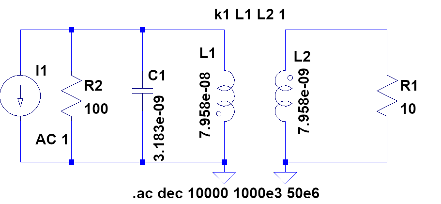
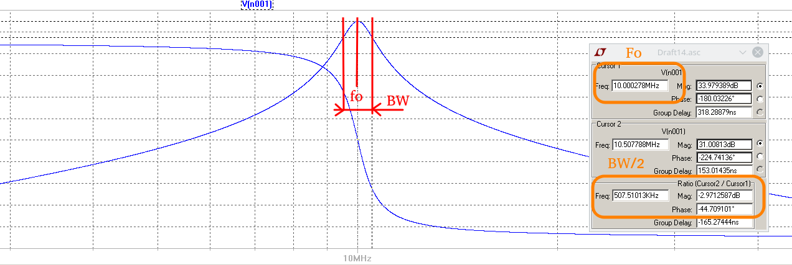
https://www.coilmaster.com.tw/comm/upfile/p_160818_07196.pdf
Divisor capacitivo¶
Dado el circuito de la figura, realizaremos el analisis mediante conversiones serie-paralelo.
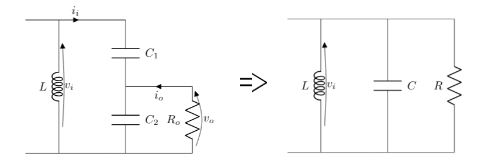
Buscamos que el circuito presente una capacidad \(C\), \(R\) dada una \(R_o\).
Para el valor de \(C_2\).Para ello realizamos la conversión paralelo a serie, con lo que obtenemos el circuito de la figura.
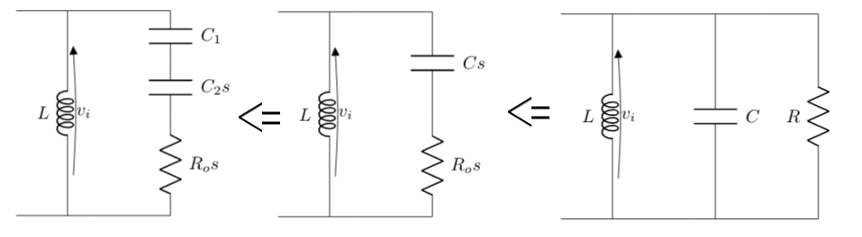
Para calcular los valores de \(R_os\) con \(Cs\), calculamos \(Q_{m2}\), partiendo de los valores de \(C\), \(R\) que son los que buscamos que presente el circuito (son datos).
Del circuito \(R\) y \(C\) paralelo:
La conversión de paralelo a serie:
A partir del valor de \(R_os\) podemos calcular \(Q_{m1}\) (de ‘matching’) para llegar al paralelo de \(R_o\) y \(C_2\):
Despejando el valor de \(Q_{m1}\)
Remplazando el valor de \(R_os\):
A partir del valor de \(Q_{m1}\), calculamo \(C_2\)
Entonces, planteadno la conversión de paralelo a serie.
La serie de \(C_2s\) y \(C_1\) deben ser igual a \(C_s\)
Despejando \(C_1\):
Por lo tanto:
Los datos son \(C\), \(R\) y \(R_o\).
Buscamos los valores de \(C_1\) y \(C_2\).
Divisor capacitivo como autotransformador¶
A partir de :\(Q_{m2} > 10\) y \(Q_{m1} > 10\).
Podemos llamar \(N^2 =\frac{R}{R_o}\), donde \(N\) será mayor a 1 ya que \(R > R_o\).
Si ahora \(Q_{m2} > 10\), entonces:
Donde si \(Q_{m1} > 10\), podemos escribir:
Calculo de \(C_2\)
Siendo \(Q_{m1}\):
Calculo de \(C_1\)
Procedimiento de calculo¶
Si \(Q_{m2} > 10\)
Si \(Q_{m1} > 10\)
Si \(Q_{m1} \le 10\)
Volvemos a calcular \(Q_{m1}\):
Teniendo el valor de \(Q_{m1}\):
Ejemplo divisor capacitivo¶
En este ejemplo trabajamos con \(Q_{m1} > 10\) y \(Q_{m2} \le 10\).
Suponer que \(R = 8100 \Omega\), \(R_o = 100 \Omega\), \(f_o = 1.5 MHz\) y \(B = 100 KHz\). Suponer que el inductor tiene un factor de merito de \(Q_o = 40\). El generador tiene un resistencia de generador de \(r_g = 8100 \Omega\).
Se busca un ancho de banda de \(B = 100 KHz\) a una frecuencia de \(f_o = 1.5 MHz\). Diseñar para máxima transferencia de energía a \(Q\) constante.
Para un circuito RLC paralelo, podiamos calcular el \(Q_c\) del circuito como:
Entonces, para el caluclo de \(L\):
Diseño del divisor capacitivo
:math:`Q_{m2} > 10`
:math:`Q_{m1} le 10`
Volvemos a calcular \(Q_{m1}\):
Teniendo el valor de \(Q_{m1}\):
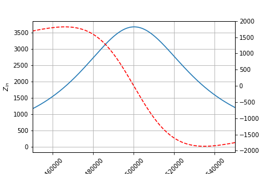
Ejemplo divisor capacitivo \(Q_{m1} > 10\) y \(Q_{m2} > 10\)¶
Suponer \(r_g = 10 K\Omega\), \(R_o = 1 K\Omega\), \(f_o = 10.7 MHz\) y \(B= 200KHz\). El inductor tiene un factor de selectividad de \(Q_o = 80\).
Para un circuito RLC paralelo, podiamos calcular el \(Q_c\) del circuito como:
Entonces, para el caluclo de \(L\):
Diseño del divisor capacitivo
Si \(Q_{m2} > 10\)
Si \(Q_{m1} > 10\)
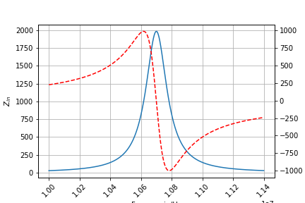
Filtro PI¶
Dado el circuito de la figura, realizaremos el analisis mediante conversiones serie-paralelo.
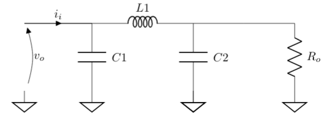
Buscamos que el circuito presente una resistencia \(R\) dada una \(R_o\) a la frecuancia de sintonia, con un determinado \(Q_c\).
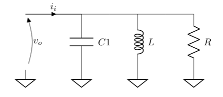
Empezando por este último y suponiendo que el inductor tiene un factor de merito de \(Q_o\).
donde \(R_{ext}\) corresponde a las resistencias totales que cierran el circuito con masa (\(R\) y \(r_g\) por ejemplo).
Entonces, \(C_1\) sintoniza con \(L\).
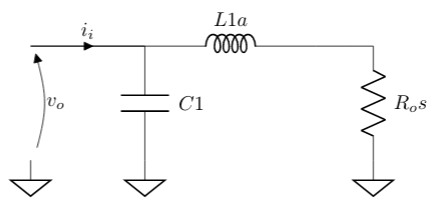
Dado \(L\), podemos calcular el \(Q_{m2}\), para la conversión paralelo a serie de \(R\) y \(L\).
Obteniendo de esta manera \(L_1a\) y \(R_os\).
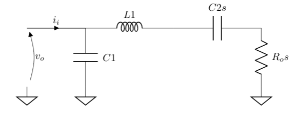
De igual manera, desde la salida
Del circuito \(R_o\) y \(C_2\) paralelo:
La conversión de paralelo a serie, que debe coincidir con el valor de conversión encontrado \(R_os\).
Despejando \(Q_{m1}\)
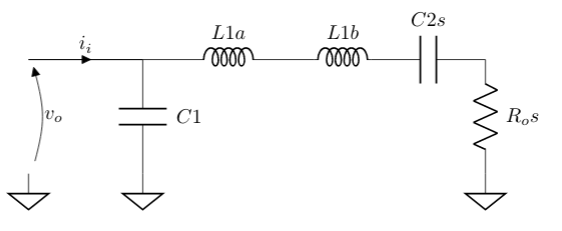
Solo queda neutralizar el capacitor \(C_2s\) con un indictor que llamamo \(L_1b\).
Por último, el valor de \(L_1\) es la suma de ambos inductores.
Ejemplo filtro PI¶
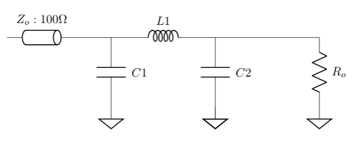
Suponer que \(R = 100 \Omega\), \(R_o = 100 \Omega\) y \(f_o = 100 MHz\). Suponer que el inductor tiene un factor de merito de \(Q_o = 40\). El generador tiene un resistencia de generador de \(r_g = 100 \Omega\).
Diseñar para máxima transferencia de energía a \(Q\) constante.
Empezando por este último y suponiendo que el inductor tiene un factor de merito de \(Q_o\).
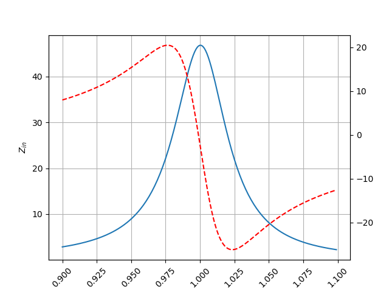
[ ]: